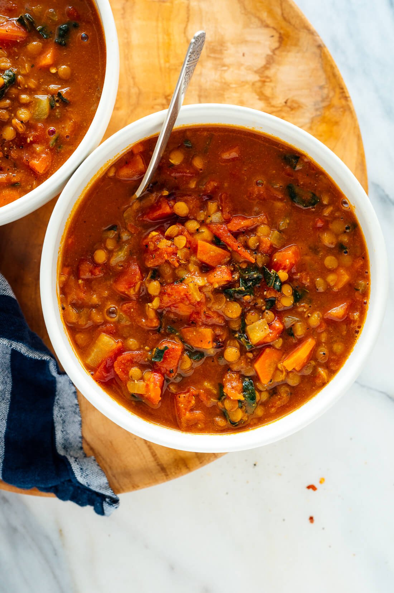

Best Lentil Soup Recipe

Honestly, the best lentil soup I've ever had!
Whether you’re looking to lighten up your meals or warm up with a steaming bowl of soup,
this healthy lentil soup recipe is for you! It’s one of my all-time favorites and I hope
it becomes a staple in your kitchen as well.
This recipe is easy to make and tates delicious. With over 2,000 5-star reviews, it sounds like
other peole have loved it as well. I also made this recipe in mind with items that are typically in stock
in a vegetarian's pantry. I wanted to keep people from having to run to the store for every new
recipe they come across.
Ingredients
- 1/4c extra virgin olive oil
- 1 medium yellow or white onion, chopped
- 2 carrots, peeled and chopped
- 4 garlic cloves, pressed or minced
- 2 tsp. ground cumin
- 1 tsp. curry powder
- 1/2 tsp. dried thyme
- 1 large can (28oz.) diced tomatoes, lightly drained
- 1c brown or green lentils, picked over and rinsed
- 4c vegetable broth
- 2c water
- 1tsp salt
- pinch of red pepper flakes
- freshly ground black pepper
- 1c chopped fresh collard greens or kale, ribs removed
- 1-2 tbsp lemon juice
Steps
- Warm the olive oil in a large Dutch oven or pot over medium heat. 1/4c olive oil
may seem like a lot, but it adds a lovely richness and heartiness to the nutritious soup.
- Once the oil is shimmering, add the chopped onion and carrot and cook, stirring often,
until the onion has softened and is turning translucent, about 5 minutes.
- Add the garlic, cumin, curry powder and thyme. Cook until fragrant while stirring constantly,
about 30 seconds. Pour in the drained diced tomatoes and cook for a few more minutes, stirring
often, in order to enhance their flavor.
- Pour in the lentils, broth and the water. Add 1 teaspoon salt and a pinch of red pepper flakes.
Season generously with freshly ground black pepper. Raise heat and bring the mixture to a boil,
then partially cover the pot and reduce the heat to maintain a gentle simmer. Cook for 25 to 30
minutes, or until the lentils are tender but still hold their shape.
- Transfer 2 cups of the soup to a blender. Securely fasten the lid, protect your hand from steam
with a tea towel placed over the lid, and purée the soup until smooth. Pour the puréed soup back
into the pot. (Or, use an immersion blender to blend a portion of the soup.)
- GrAdd the chopped greens and cook for 5 more minutes, or until the greens have softened to
your liking. Remove the pot from the heat and stir in 1 tablespoon of lemon juice. Taste and
season with more salt, pepper and/or lemon juice until the flavors really sing. For spicier
soup, add another pinch or two of red pepper flakes.
- Serve while hot. Leftovers will keep well for about 4 days in the refrigerator, or can be frozen
for several months. (Just defrost before serving)